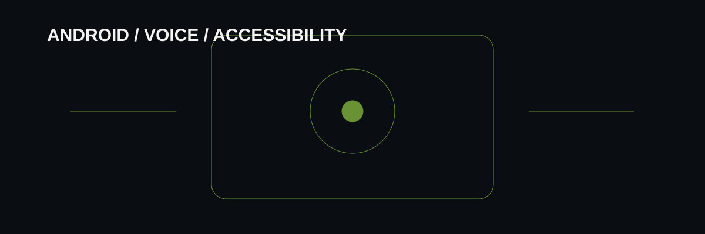

Evolution
The earlier EyeNav concept explored face/gaze-based navigation. The current direction moves toward Doc: hotword and voice-command interaction designed to work with background/locked-screen goals.
An Android project that evolved from gaze-navigation experiments toward a voice-first assistant concept.

The earlier EyeNav concept explored face/gaze-based navigation. The current direction moves toward Doc: hotword and voice-command interaction designed to work with background/locked-screen goals.
Hands-free commands, assistant feedback and accessibility-oriented interaction are treated as the primary experience rather than visual navigation alone.
Android, voice interaction, background behavior, accessibility concepts and iterative GitHub-based development.
This build is part of a broader toolkit connecting business operations, data, automation, AI, software and web engineering.
Explore all systems & work ↗